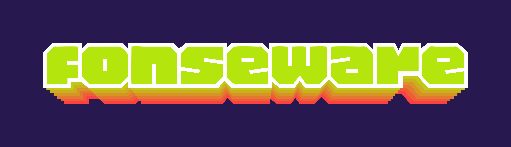

fonseware webserver status
this is the status page for fonseware.com
checking all services...
status auto-refreshes every 5 seconds.
🌐 fonseware services status
www.fonseware.com
checking...
forum.fonseware.com
checking...
📜 past downtime incidents
what and why is this page here?
my website runs on a home-hosted webserver. sometimes it goes offline for maintenance or when my computer needs a break. any unusual issues or interruptions while the server is running will be reported here. normal planned downtime (like updates or restarts) might not be listed. i’m actively investing in solutions to maintain 99% server uptime and keep things running smoothly.